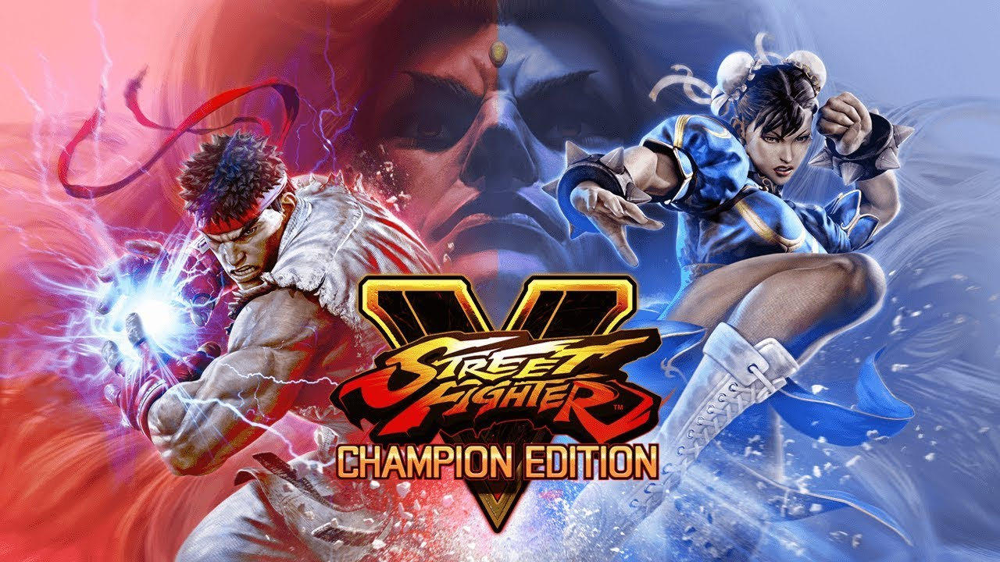

ESPORT
COACHING
Learn the basics of street fighter V
About
The main goal of this coaching page is to give a very basic introduction into the world of Street Fighter, so that people who may have never played a fighting game can enjoy a new genre of games. The very initial stages of learning this game aren't too hard to learn, but once you understand the fundamental mechanics, you can start getting good practice and improving your gameplay fast. What you will be learning on this page is a brief introduction into Street Fighter V, an explanation of the controls, and a breakdown of the V-System that serves as the core unique mechanic of this entry into the Street Fighter series.
In the first year after release, the game was undersold due to poor online gameplay and lacking good single-player modes, but more content was added throughout the game's lifespan. The majority of the game's content revolves around the versus mode, where you can fight in 1v1 battles with the character of your choosing. The basic strategies people will use involve controlling space around your character and converting any stray hits into combos to reduce the opponent's health to 0.
33rd
Street Fighter Game
Teen
ESRB Rating
46
Characters After DLC
81%
Avg. Metacritic Score
About
This game has a decently high skill ceiling for players to master techniques such as combos, setplay, and spacing. Combos are built by using moves that allow your character to recover before the opponent, then using a follow-up attack that is fast enough to "link" or canceling into a special move. Any character that looks interesting to you can be a good choice to start out with, since you will have the most fun when you enjoy playing the character. However, a great place to start for people who just want to learn the basics is Ryu. Ryu is a very balanced character built to be easy to understand and good in many situations.
The best way to improve your gameplay is by playing with other real people or watching other people play to learn new things. A great way to analyze your gameplay is by watching your match replays in the game and evaluating what you could have done differently.
Additional Resources:
Core-A Gaming Channel- They make great fighting game analysis content and do interviews of real players to teach people about concepts in fighting games.
Capcom Fighters Channel- Contains thousands of hours of gameplay from tournaments to watch if you want to see gameplay of any characters, also has good commentary over the footage to explain what each player is thinking and doing.
Footer Banner Section
CONTACT INFO